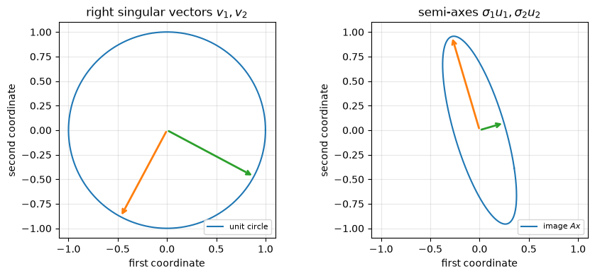
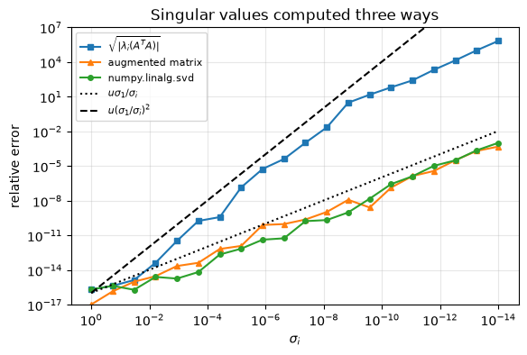

2.11. Lab 2: The singular value decomposition#
This notebook accompanies Chapter 2 of the notes. Every experiment checks a statement of the chapter numerically, and every verification uses a tolerance derived from an error bound.
Learning objectives. After working through this lab you should be able to
compute full, thin and compact SVDs with NumPy and verify them;
read off rank, bases of the four fundamental subspaces, norms and the condition number from an SVD;
check the relation between singular values and the eigenvalues of \(A^TA\) and of the augmented matrix, and demonstrate why singular values must not be computed from \(A^TA\);
verify the Eckart–Young–Mirsky theorem and Weyl’s perturbation bound from computed errors rather than assuming them;
choose a tolerance for the numerical rank and for the pseudoinverse, and compute minimum-norm least-squares solutions.
Run the cells in order from a fresh kernel.
import time
import matplotlib.pyplot as plt
import numpy as np
import scipy
import scipy.linalg as sla
rng = np.random.default_rng(20260202)
u = np.finfo(float).eps / 2 # unit roundoff of IEEE double precision, 2**-53
plt.rcParams.update({"figure.figsize": (6.4, 4.0), "axes.grid": True, "grid.alpha": 0.3})
print(f"NumPy {np.__version__}, SciPy {scipy.__version__}; unit roundoff u = {u:.3e}")
def random_orthonormal(m, n):
"""An m x n matrix with orthonormal columns (Q factor of a Gaussian matrix)."""
Q, _ = np.linalg.qr(rng.standard_normal((m, n)))
return Q
NumPy 2.5.3, SciPy 1.18.1; unit roundoff u = 1.110e-16
2.11.1. 1. Full, thin and compact SVD#
numpy.linalg.svd(A) returns U, the singular values s as a
one-dimensional array in decreasing order, and Vh \(= V^T\) (not \(V\)). By
default it computes the full SVD; full_matrices=False gives the thin
SVD.
Tolerances. The SVD computed by LAPACK is backward stable: the computed factors are orthogonal to within a small multiple of \(u\) and reproduce \(A\) with a relative error that is a modest multiple of \(u\), growing at most mildly with the dimension. We test against \(10\max(m,n)\,u\), which leaves a wide margin while still detecting any real error (a wrong sign or a transposed factor gives errors of order one).
m, n = 8, 5
A = rng.standard_normal((m, n))
U, s, Vh = np.linalg.svd(A) # full SVD
Ut, st, Vht = np.linalg.svd(A, full_matrices=False) # thin SVD
print("full :", U.shape, s.shape, Vh.shape)
print("thin :", Ut.shape, st.shape, Vht.shape)
Sigma = np.zeros((m, n))
np.fill_diagonal(Sigma, s)
tol = 10 * max(m, n) * u
checks = {
"||U^T U - I||_2": np.linalg.norm(U.T @ U - np.eye(m), 2),
"||V^T V - I||_2": np.linalg.norm(Vh @ Vh.T - np.eye(n), 2),
"||A - U Sigma V^T||_2 / ||A||_2 (full)": np.linalg.norm(A - U @ Sigma @ Vh, 2) / s[0],
"||A - U_n Sigma_n V^T||_2 / ||A||_2 (thin)": np.linalg.norm(A - (Ut * st) @ Vht, 2) / s[0],
}
for name, val in checks.items():
print(f"{name:45s} {val:.2e}")
assert val < tol
assert np.all(np.diff(s) <= 0) and np.all(s >= 0) # sorted, nonnegative
print(f"tolerance 10 max(m,n) u = {tol:.1e}")
full : (8, 8) (5,) (5, 5)
thin : (8, 5) (5,) (5, 5)
||U^T U - I||_2 1.98e-15
||V^T V - I||_2 1.44e-15
||A - U Sigma V^T||_2 / ||A||_2 (full) 1.42e-15
||A - U_n Sigma_n V^T||_2 / ||A||_2 (thin) 1.42e-15
tolerance 10 max(m,n) u = 8.9e-15
Note the idiom (Ut * st) @ Vht: multiplying the columns of \(U\) by the
singular values with broadcasting costs \(mn\) flops, whereas forming
np.diag(st) and multiplying costs \(2mn^2\).
The compact SVD keeps only the \(r\) columns belonging to nonzero singular values. For a matrix of exact rank 3 the computed singular values \(\sigma_4,\sigma_5\) are not zero but of order \(u\sigma_1\), so “nonzero” needs a tolerance (Section 4).
X = rng.standard_normal((m, 3))
Y = rng.standard_normal((3, n))
A3 = X @ Y # rank 3 in exact arithmetic
U3, s3, Vh3 = np.linalg.svd(A3, full_matrices=False)
print("singular values:", np.array2string(s3, precision=3))
print("sigma_4 / (u sigma_1) =", s3[3] / (u * s3[0]))
r = int(np.sum(s3 > max(m, n) * np.finfo(float).eps * s3[0]))
Ur, sr, Vhr = U3[:, :r], s3[:r], Vh3[:r]
print(f"compact SVD: r = {r}, shapes {Ur.shape}, {sr.shape}, {Vhr.shape}")
assert r == 3
assert np.linalg.norm(A3 - (Ur * sr) @ Vhr, 2) < tol * s3[0]
singular values: [8.707e+00 5.887e+00 3.777e+00 1.189e-15 3.932e-16]
sigma_4 / (u sigma_1) = 1.229819893738462
compact SVD: r = 3, shapes (8, 3), (3,), (3, 5)
The trailing singular values are a few multiples of \(u\sigma_1\), exactly the
size predicted by the perturbation bound
\(|\sigma_i(A+E)-\sigma_i(A)|\le\|E\|_2\) with \(\|E\|_2\) of the order of the
rounding errors made in forming X @ Y.
2.11.2. 2. The worked example#
Example 2.1 found, for \(B = \begin{bmatrix}3&0\\4&5\end{bmatrix}\), \(\sigma_1 = 3\sqrt5\), \(\sigma_2 = \sqrt5\), \(U = \tfrac1{\sqrt{10}}\begin{bmatrix}1&3\\3&-1\end{bmatrix}\) and \(V = \tfrac1{\sqrt2}\begin{bmatrix}1&1\\1&-1\end{bmatrix}\). Singular vectors are unique only up to simultaneous sign changes of \((u_i, v_i)\), so we compare after normalizing signs.
B = np.array([[3.0, 0.0], [4.0, 5.0]])
U_hand = np.array([[1.0, 3.0], [3.0, -1.0]]) / np.sqrt(10)
V_hand = np.array([[1.0, 1.0], [1.0, -1.0]]) / np.sqrt(2)
s_hand = np.array([3 * np.sqrt(5), np.sqrt(5)])
UB, sB, VhB = np.linalg.svd(B)
signs = np.sign(np.sum(VhB.T * V_hand, axis=0)) # +1 or -1 for each pair
print("NumPy U:\n", UB, "\nNumPy V:\n", VhB.T, "\nsingular values:", sB)
assert np.allclose(sB, s_hand, rtol=10 * u, atol=0)
assert np.allclose(UB * signs, U_hand, atol=10 * u) and np.allclose(VhB.T * signs, V_hand, atol=10 * u)
print("agrees with the hand computation up to the signs", signs)
NumPy U:
[[-0.31622777 -0.9486833 ]
[-0.9486833 0.31622777]]
NumPy V:
[[-0.70710678 -0.70710678]
[-0.70710678 0.70710678]]
singular values: [6.70820393 2.23606798]
agrees with the hand computation up to the signs [-1. -1.]
2.11.3. 3. Geometry: the image of the unit circle#
For a \(2\times2\) matrix the image of the unit circle is an ellipse with semi-axes \(\sigma_1u_1\) and \(\sigma_2u_2\) (Theorem 2.2). We check numerically that the largest and smallest values of \(\|Ax\|_2\) on the circle are \(\sigma_1\) and \(\sigma_2\).
A2 = rng.standard_normal((2, 2))
U2, s2, Vh2 = np.linalg.svd(A2)
t = np.linspace(0, 2 * np.pi, 2001)
circle = np.vstack([np.cos(t), np.sin(t)])
image = A2 @ circle
lengths = np.linalg.norm(image, axis=0)
print(f"max ||Ax|| on the grid = {lengths.max():.6f}, sigma_1 = {s2[0]:.6f}")
print(f"min ||Ax|| on the grid = {lengths.min():.6f}, sigma_2 = {s2[1]:.6f}")
# The grid misses the optimal angle by at most pi/2000; near a maximum the
# error in ||Ax|| is second order in the angle, so a relative gap of 1e-5 is ample.
assert lengths.max() <= s2[0] * (1 + 10 * u) and lengths.max() > s2[0] * (1 - 1e-5)
assert lengths.min() >= s2[1] * (1 - 10 * u) and lengths.min() < s2[1] * (1 + 1e-5) + 1e-12
fig, axes = plt.subplots(1, 2, figsize=(9, 4))
axes[0].plot(*circle, label="unit circle")
for i, c in enumerate(("C1", "C2")):
axes[0].annotate("", xy=Vh2[i], xytext=(0, 0), arrowprops=dict(arrowstyle="->", color=c, lw=2))
axes[1].annotate("", xy=s2[i] * U2[:, i], xytext=(0, 0), arrowprops=dict(arrowstyle="->", color=c, lw=2))
axes[1].plot(*image, label="image $Ax$")
axes[0].set_title(r"right singular vectors $v_1, v_2$")
axes[1].set_title(r"semi-axes $\sigma_1 u_1, \sigma_2 u_2$")
lim = 1.1 * max(1.0, s2[0])
for ax in axes:
ax.set_aspect("equal")
ax.set_xlim(-lim, lim)
ax.set_ylim(-lim, lim)
ax.set_xlabel("first coordinate")
ax.set_ylabel("second coordinate")
ax.legend(loc="lower right", fontsize=8)
plt.tight_layout()
plt.show()
max ||Ax|| on the grid = 0.994536, sigma_1 = 0.994536
min ||Ax|| on the grid = 0.258760, sigma_2 = 0.258760

The arrows on the right lie exactly on the semi-axes of the ellipse. This is Figure 2.1 for a random matrix.
2.11.4. 4. Rank, fundamental subspaces, and numerical rank#
We return to the matrix A3 of exact rank 3 and extract orthonormal bases of
its four fundamental subspaces from the SVD (Theorem 2.3).
Because of rounding, \(A v_i\) for \(i>3\) is not exactly zero but of size
\(\sigma_i\approx u\sigma_1\); we test against \(10\max(m,n)u\,\sigma_1\).
U3f, s3f, Vh3f = np.linalg.svd(A3) # full SVD: bases of all of R^m and R^n
r = 3
range_A, null_At = U3f[:, :r], U3f[:, r:]
range_At, null_A = Vh3f[:r].T, Vh3f[r:].T
print("dimensions:", range_A.shape[1], null_At.shape[1], range_At.shape[1], null_A.shape[1])
small = 10 * max(m, n) * u * s3f[0]
print(f"||A N(A)||_2 = {np.linalg.norm(A3 @ null_A, 2):.1e}")
print(f"||A^T N(A^T)||_2 = {np.linalg.norm(A3.T @ null_At, 2):.1e}")
assert np.linalg.norm(A3 @ null_A, 2) < small and np.linalg.norm(A3.T @ null_At, 2) < small
# range(A) is spanned by the columns of X; the projector onto it must fix X.
P = range_A @ range_A.T
print(f"||(I - P) X||_2 / ||X||_2 = {np.linalg.norm(X - P @ X, 2) / np.linalg.norm(X, 2):.1e}")
assert np.linalg.norm(X - P @ X, 2) < 100 * max(m, n) * u * np.linalg.norm(X, 2) * s3f[0] / s3f[r - 1]
dimensions: 3 5 3 2
||A N(A)||_2 = 3.4e-15
||A^T N(A^T)||_2 = 8.1e-16
||(I - P) X||_2 / ||X||_2 = 2.2e-16
The last tolerance contains the factor \(\sigma_1/\sigma_r\): the computed singular subspace for \(\sigma_1,\dots,\sigma_r\) is accurate to about \(u\sigma_1/(\sigma_r-\sigma_{r+1})\), a gap-dependent bound that we will meet again for eigenvectors in Chapter 9.
Numerical rank. numpy.linalg.matrix_rank counts singular values larger
than \(\tau = \max(m,n)\,\epsilon_{\text{mach}}\,\sigma_1\). That default is
right for rounding errors. For data with noise it is wrong, as the next cell
shows for the matrix of Example 2.5.
rng11 = np.random.default_rng(11) # same matrix as the notes and the figure
L = rng11.standard_normal((60, 8))
R = rng11.standard_normal((8, 60))
E = rng11.standard_normal((60, 60))
A_hat = L @ R # rank 8
N = 0.05 * E # noise
A_noisy = A_hat + N
s_noisy = np.linalg.svd(A_noisy, compute_uv=False)
eta = np.linalg.norm(N, 2)
print(f"sigma_8 = {s_noisy[7]:.4g}, sigma_9 = {s_noisy[8]:.4g}, ||noise||_2 = {eta:.4g}")
print("default matrix_rank:", np.linalg.matrix_rank(A_noisy))
for tau in (1e-10, 1e-2, eta, 1.0, 10.0, 40.0):
print(f"tau = {tau:8.3g}: rank_tau = {int(np.sum(s_noisy > tau))}")
# Proposition ch02-prop-numerical-rank (2): tau >= eta and sigma_8(A_hat) > tau + eta give rank 8.
s_hat8 = np.linalg.svd(A_hat, compute_uv=False)[7]
assert s_hat8 > 2 * eta and int(np.sum(s_noisy > eta)) == 8
assert s_noisy[8] <= eta * (1 + 10 * u) # Weyl: sigma_9(A) <= sigma_9(A_hat) + eta = eta
sigma_8 = 36.33, sigma_9 = 0.6503, ||noise||_2 = 0.7195
default matrix_rank: 60
tau = 1e-10: rank_tau = 60
tau = 0.01: rank_tau = 60
tau = 0.719: rank_tau = 8
tau = 1: rank_tau = 8
tau = 10: rank_tau = 8
tau = 40: rank_tau = 7
The default tolerance reports full rank 60, because the noise singular values (about \(0.01\) to \(0.65\)) are far above rounding level. Any tolerance between the noise level \(\|N\|_2\approx0.72\) and \(\sigma_8\approx36\) gives rank 8. Proposition 2.2 guarantees this in advance, without looking at the computed singular values of \(A\), for every \(\tau\) with \(\|N\|_2\le\tau<\sigma_8(\hat A)-\|N\|_2\approx35.6\).
2.11.5. 5. Norms and the condition number#
n = 50
A = rng.standard_normal((n, n))
s = np.linalg.svd(A, compute_uv=False)
Ainv = np.linalg.inv(A)
rows = [
("||A||_2 vs sigma_1", np.linalg.norm(A, 2), s[0]),
("||A||_F vs sqrt(sum sigma_i^2)", np.linalg.norm(A, "fro"), np.sqrt(np.sum(s**2))),
("||A^-1||_2 vs 1/sigma_n", np.linalg.norm(Ainv, 2), 1 / s[-1]),
("cond(A) vs sigma_1/sigma_n", np.linalg.cond(A), s[0] / s[-1]),
("|det A| vs prod sigma_i", abs(np.linalg.det(A)), np.prod(s)),
]
kappa = s[0] / s[-1]
for name, lhs, rhs in rows:
print(f"{name:32s} {lhs:12.6g} {rhs:12.6g} rel. diff {abs(lhs - rhs) / abs(rhs):.1e}")
# Norms computed from the same SVD agree to O(n u). The inverse is computed by LU,
# so its 2-norm carries a relative error of order kappa u (Chapter 4).
for name, lhs, rhs in rows[:2]:
assert abs(lhs - rhs) <= 10 * n * u * rhs
assert abs(rows[2][1] - rows[2][2]) <= 10 * n * kappa * u * rows[2][2]
assert abs(rows[4][1] - rows[4][2]) <= 10 * n * n * u * rows[4][2] # n^2 u: products of n factors
print(f"kappa_2(A) = {kappa:.3g}")
||A||_2 vs sigma_1 14.242 14.242 rel. diff 0.0e+00
||A||_F vs sqrt(sum sigma_i^2) 51.1796 51.1796 rel. diff 0.0e+00
||A^-1||_2 vs 1/sigma_n 3.74936 3.74936 rel. diff 2.8e-15
cond(A) vs sigma_1/sigma_n 53.3983 53.3983 rel. diff 0.0e+00
|det A| vs prod sigma_i 3.22058e+32 3.22058e+32 rel. diff 2.2e-16
kappa_2(A) = 53.4
2.11.6. 6. Singular values and eigenvalues#
Theorem 2.5: the eigenvalues of \(A^TA\) are \(\sigma_i^2\) (and \(n-p\) zeros), and those of the augmented matrix \(C = \begin{bmatrix}0&A^T\\A&0\end{bmatrix}\) are \(\pm\sigma_i\) and \(|m-n|\) zeros. We check both for a \(7\times4\) matrix, for which \(C\) is \(11\times11\) and must have \(3\) zero eigenvalues although \(A\) has full rank.
m, n = 7, 4
A = rng.standard_normal((m, n))
s = np.linalg.svd(A, compute_uv=False)
lam_AtA = np.sort(np.linalg.eigvalsh(A.T @ A))[::-1]
C = np.block([[np.zeros((n, n)), A.T], [A, np.zeros((m, m))]])
lam_C = np.sort(np.linalg.eigvalsh(C))
print("sigma_i^2 :", np.array2string(s**2, precision=6))
print("eig(A^T A) :", np.array2string(lam_AtA, precision=6))
print("eig(C) :", np.array2string(lam_C, precision=6))
expected = np.sort(np.concatenate([s, -s, np.zeros(abs(m - n))]))
# A backward stable symmetric eigensolver has absolute eigenvalue errors O((m+n) u ||C||_2), ||C||_2 = sigma_1.
assert np.max(np.abs(lam_C - expected)) < 10 * (m + n) * u * s[0]
assert np.max(np.abs(lam_AtA - s**2)) < 10 * n * u * s[0] ** 2
n_zero = int(np.sum(np.abs(lam_C) < 10 * (m + n) * u * s[0]))
print(f"zero eigenvalues of C: {n_zero} (|m - n| = {abs(m - n)}); C is singular although rank(A) = {n}")
assert n_zero == abs(m - n)
sigma_i^2 : [12.113528 6.572129 5.400481 1.083553]
eig(A^T A) : [12.113528 6.572129 5.400481 1.083553]
eig(C) : [-3.480449e+00 -2.563616e+00 -2.323894e+00 -1.040939e+00 -4.865296e-16
5.840135e-18 4.806894e-16 1.040939e+00 2.323894e+00 2.563616e+00
3.480449e+00]
zero eigenvalues of C: 3 (|m - n| = 3); C is singular although rank(A) = 4
For the square case, \(C\) is nonsingular exactly when \(A\) is, and then \(\kappa_2(C) = \kappa_2(A)\).
A = rng.standard_normal((6, 6))
C = np.block([[np.zeros((6, 6)), A.T], [A, np.zeros((6, 6))]])
print(f"kappa_2(A) = {np.linalg.cond(A):.6f}, kappa_2(C) = {np.linalg.cond(C):.6f}")
assert abs(np.linalg.cond(C) / np.linalg.cond(A) - 1) < 100 * 12 * u * np.linalg.cond(A)
kappa_2(A) = 139.816567, kappa_2(C) = 139.816567
2.11.7. 7. Why not compute singular values from \(A^TA\)?#
2.11.7.1. The Läuchli matrix#
We reproduce Example 2.3 with \(\delta = 10^{-8}\). The exact singular values are \(\sqrt{2+\delta^2}\) and \(\delta\).
delta = 1e-8
A = np.array([[1.0, 1.0], [delta, 0.0], [0.0, delta]])
AtA = A.T @ A
print("computed A^T A =\n", AtA)
lam = np.linalg.eigvalsh(AtA)
sigma2_eig = np.sqrt(max(lam[0], 0.0))
sigma2_svd = np.linalg.svd(A, compute_uv=False)[1]
C = np.block([[np.zeros((2, 2)), A.T], [A, np.zeros((3, 3))]])
sigma2_aug = np.sort(np.linalg.eigvalsh(C))[-2]
for name, val in [("sqrt(eig(A^T A))", sigma2_eig), ("svd", sigma2_svd), ("eig of augmented C", sigma2_aug)]:
print(f"{name:20s} sigma_2 = {val:.16e} relative error {abs(val - delta) / delta:.1e}")
assert np.array_equal(AtA, np.ones((2, 2))) # 1 + 1e-16 rounds to 1
# Backward stability and Weyl: |error| <= c u sigma_1, i.e. relative error <= c u sqrt(2)/delta ~ 1.6e-8 c.
assert abs(sigma2_svd - delta) / delta < 10 * u * np.sqrt(2) / delta
assert abs(sigma2_aug - delta) / delta < 10 * u * np.sqrt(2) / delta
computed A^T A =
[[1. 1.]
[1. 1.]]
sqrt(eig(A^T A)) sigma_2 = 0.0000000000000000e+00 relative error 1.0e+00
svd sigma_2 = 9.9999999999999986e-09 relative error 1.7e-16
eig of augmented C sigma_2 = 9.9999999494237787e-09 relative error 5.1e-09
The computed \(A^TA\) is exactly the singular matrix of ones, so no eigensolver can recover \(\sigma_2\): the information was lost when \(1+\delta^2\) was rounded to \(1\). The SVD and the augmented matrix work with \(A\) itself and return \(\sigma_2\) with a relative error within the worst-case estimate \(u\,\sigma_1/\sigma_2\approx 1.6\times10^{-8}\) (the SVD happens to be even more accurate for this matrix).
2.11.7.2. A graded matrix#
Next we build a \(30\times20\) matrix \(A = U\operatorname{diag}(\sigma)V^T\) with singular values spaced logarithmically from \(1\) to \(10^{-14}\) and compare three ways of computing them. The reference values are the prescribed \(\sigma_i\); forming \(A\) in floating point already perturbs them by about \(u\sigma_1\) in absolute terms, which is the same size as the error of a backward stable SVD.
m, n = 30, 20
s_true = np.logspace(0, -14, n)
A = (random_orthonormal(m, n) * s_true) @ random_orthonormal(n, n).T
s_svd = np.linalg.svd(A, compute_uv=False)
lam = np.sort(np.linalg.eigvalsh(A.T @ A))[::-1]
s_eig = np.sqrt(np.abs(lam))
C = np.block([[np.zeros((n, n)), A.T], [A, np.zeros((m, m))]])
s_aug = np.sort(np.linalg.eigvalsh(C))[::-1][:n]
print(f"negative computed eigenvalues of A^T A: {int(np.sum(lam < 0))} of {n}")
print(f"max |svd - sigma| / (u sigma_1) = {np.max(np.abs(s_svd - s_true)) / u:.1f}")
print(f"max |aug - sigma| / (u sigma_1) = {np.max(np.abs(s_aug - s_true)) / u:.1f}")
print(f"max |eig(A^T A) - sigma^2| / (u sigma_1^2) = {np.max(np.abs(lam - s_true**2)) / u:.1f}")
fig, ax = plt.subplots()
floor = u / 10
ax.loglog(s_true, np.maximum(np.abs(s_eig - s_true) / s_true, floor), "s-", ms=4, label=r"$\sqrt{|\lambda_i(A^TA)|}$")
ax.loglog(s_true, np.maximum(np.abs(s_aug - s_true) / s_true, floor), "^-", ms=4, label="augmented matrix")
ax.loglog(s_true, np.maximum(np.abs(s_svd - s_true) / s_true, floor), "o-", ms=4, label="numpy.linalg.svd")
ax.loglog(s_true, u / s_true, "k:", label=r"$u\sigma_1/\sigma_i$")
ax.loglog(s_true, u / s_true**2, "k--", label=r"$u(\sigma_1/\sigma_i)^2$")
ax.set_ylim(1e-17, 1e7)
ax.invert_xaxis()
ax.set_xlabel(r"$\sigma_i$")
ax.set_ylabel("relative error")
ax.set_title("Singular values computed three ways")
ax.legend(fontsize=8)
plt.show()
# Error bounds: SVD and augmented matrix O(n u sigma_1) absolutely; A^T A route O(n u sigma_1^2) in sigma^2.
assert np.max(np.abs(s_svd - s_true)) < 10 * n * u * s_true[0]
assert np.max(np.abs(s_aug - s_true)) < 10 * n * u * s_true[0]
assert np.max(np.abs(lam - s_true**2)) < 10 * n * u * s_true[0] ** 2
# ...and that bound is useless for the small singular values: no correct digits below 1e-9.
assert np.all(np.abs(s_eig - s_true)[s_true < 1e-9] / s_true[s_true < 1e-9] > 1)
negative computed eigenvalues of A^T A: 5 of 20
max |svd - sigma| / (u sigma_1) = 2.0
max |aug - sigma| / (u sigma_1) = 1.0
max |eig(A^T A) - sigma^2| / (u sigma_1^2) = 6.0

Interpretation. All three methods deliver absolute errors that are small multiples of their natural unit: \(u\sigma_1\) for the SVD and the augmented matrix, \(u\sigma_1^2\) for the eigenvalues of \(A^TA\). Measured relative to \(\sigma_i\), the first two lose accuracy like \(\sigma_1/\sigma_i\) and the third like \((\sigma_1/\sigma_i)^2\), so it has no correct digits once \(\sigma_i\lesssim\sqrt u\,\sigma_1\approx10^{-8}\). Some computed eigenvalues of \(A^TA\) are even negative, which a positive semidefinite matrix cannot have.
2.11.8. 8. Eckart–Young–Mirsky from computed errors#
For the noisy rank-8 matrix of Section 4 we form each \(A_k\) explicitly, compute \(\|A-A_k\|_2\) and \(\|A-A_k\|_F\) from the difference, and compare with \(\sigma_{k+1}\) and \((\sum_{i>k}\sigma_i^2)^{1/2}\). The theorem predicts equality; in floating point the two sides differ by rounding errors of order \(n u\sigma_1\).
A = A_noisy
m, n = A.shape
U, s, Vh = np.linalg.svd(A)
tail = np.sqrt(np.cumsum((s**2)[::-1])[::-1]) # tail[k] = sqrt(sum_{i>k} sigma_i^2), 0-based
err2, errF = [], []
for k in range(n):
Ak = (U[:, :k] * s[:k]) @ Vh[:k]
err2.append(np.linalg.norm(A - Ak, 2))
errF.append(np.linalg.norm(A - Ak, "fro"))
err2, errF = np.array(err2), np.array(errF)
print(" k ||A-A_k||_2 sigma_{k+1} ||A-A_k||_F tail sum")
for k in (0, 1, 7, 8, 9, 30, 59):
print(f"{k:2d} {err2[k]:11.5g} {s[k]:11.5g} {errF[k]:11.5g} {tail[k]:9.5g}")
print(f"max |computed 2-norm error - sigma_(k+1)| = {np.max(np.abs(err2 - s)):.1e}")
print(f"max |computed F-norm error - tail sum| = {np.max(np.abs(errF - tail)):.1e}")
assert np.max(np.abs(err2 - s)) < 10 * n * u * s[0]
assert np.max(np.abs(errF - tail)) < 10 * n * u * s[0]
print(f"relative Frobenius error of A_8: {errF[8] / np.linalg.norm(A, 'fro'):.4f}")
print(f"storage of A_8: {8 * (m + n + 1)} numbers instead of {m * n}")
k ||A-A_k||_2 sigma_{k+1} ||A-A_k||_F tail sum
0 86.606 86.606 169.88 169.88
1 77.178 77.178 146.15 146.15
7 36.326 36.326 36.418 36.418
8 0.65027 0.65027 2.5897 2.5897
9 0.64569 0.64569 2.5068 2.5068
30 0.34794 0.34794 1.0767 1.0767
59 0.01072 0.01072 0.01072 0.01072
max |computed 2-norm error - sigma_(k+1)| = 3.6e-14
max |computed F-norm error - tail sum| = 5.7e-14
relative Frobenius error of A_8: 0.0152
storage of A_8: 968 numbers instead of 3600
The computed errors agree with the singular values to within a small multiple of \(u\sigma_1\approx10^{-14}\), as predicted, and the 2-norm and Frobenius errors are clearly different numbers: after the gap, \(\|A-A_k\|_F\) is several times \(\sigma_{k+1}\).
No competitor does better. Eckart–Young–Mirsky is a statement about all matrices of rank at most \(k\). We try a few natural competitors: the projection of \(A\) onto \(k\) random directions, onto the span of its first \(k\) columns, and a truncated SVD of a perturbed \(A\).
k = 8
competitors = {}
Qr = random_orthonormal(m, k)
competitors["random projection Q Q^T A"] = Qr @ (Qr.T @ A)
Qc, _ = np.linalg.qr(A[:, :k])
competitors["projection onto first k columns"] = Qc @ (Qc.T @ A)
G = 0.1 * rng.standard_normal(A.shape)
Up, sp, Vhp = np.linalg.svd(A + G)
competitors["truncated SVD of A + 0.1 G"] = (Up[:, :k] * sp[:k]) @ Vhp[:k]
print(f"{'best (A_8)':35s} 2-norm {s[k]:8.4f} Frobenius {tail[k]:8.4f}")
for name, Bk in competitors.items():
e2, eF = np.linalg.norm(A - Bk, 2), np.linalg.norm(A - Bk, "fro")
print(f"{name:35s} 2-norm {e2:8.4f} Frobenius {eF:8.4f}")
assert np.linalg.matrix_rank(Bk) <= k
assert e2 >= s[k] * (1 - 10 * n * u) and eF >= tail[k] * (1 - 10 * n * u)
# Stability argument of the notes: truncating the SVD of A + G costs at most 2 ||G||_2 extra.
e2_pert = np.linalg.norm(A - competitors["truncated SVD of A + 0.1 G"], 2)
print(f"sigma_9 + 2 ||G||_2 = {s[k] + 2 * np.linalg.norm(G, 2):.4f} >= {e2_pert:.4f}")
assert e2_pert <= s[k] + 2 * np.linalg.norm(G, 2)
best (A_8) 2-norm 0.6503 Frobenius 2.5897
random projection Q Q^T A 2-norm 84.3494 Frobenius 160.2229
projection onto first k columns 2-norm 50.0008 Frobenius 50.2222
truncated SVD of A + 0.1 G 2-norm 1.1888 Frobenius 4.0066
sigma_9 + 2 ||G||_2 = 3.6548 >= 1.1888
Projecting onto random directions or onto the span of a few columns of \(A\) gives poor approximations. The truncated SVD of a perturbed matrix is close to optimal, and its excess error is within the bound \(\|A-\widetilde A_k\|_2\le\sigma_{k+1}(A)+2\|G\|_2\) derived in the notes. Every competitor loses, as it must.
2.11.9. 9. Perturbation of singular values#
Corollary 2.1 says \(|\sigma_i(A+E)-\sigma_i(A)|\le\|E\|_2\) for every \(i\), and Mirsky’s theorem gives \(\big(\sum_i(\sigma_i(A+E)-\sigma_i(A))^2\big)^{1/2}\le\|E\|_F\). We test both for perturbations of very different sizes, and compare with the eigenvalues of a nonsymmetric matrix.
A = rng.standard_normal((40, 25))
s = np.linalg.svd(A, compute_uv=False)
print(" ||E||_2 max_i |d sigma_i| / ||E||_2 ||d sigma||_2 / ||E||_F")
for scale in (1e-12, 1e-6, 1e-2, 1.0):
worst, worst_F = 0.0, 0.0
for _ in range(20):
E = scale * rng.standard_normal(A.shape)
ds = np.linalg.svd(A + E, compute_uv=False) - s
nE2, nEF = np.linalg.norm(E, 2), np.linalg.norm(E, "fro")
worst = max(worst, np.max(np.abs(ds)) / nE2)
worst_F = max(worst_F, np.linalg.norm(ds) / nEF)
# Rounding in both SVDs adds up to ~ 10 n u sigma_1 to the observed difference.
assert np.max(np.abs(ds)) <= nE2 + 20 * 40 * u * s[0]
assert np.linalg.norm(ds) <= nEF + 20 * 40 * u * s[0] * np.sqrt(25)
print(f" {nE2:8.1e} {worst:26.3f} {worst_F:22.3f}")
||E||_2 max_i |d sigma_i| / ||E||_2 ||d sigma||_2 / ||E||_F
1.1e-11 0.307 0.206
9.9e-06 0.314 0.208
1.1e-01 0.254 0.176
1.1e+01 0.547 0.485
The ratios stay below \(1\), as the theorems require, for perturbations ranging over twelve orders of magnitude. For random perturbations they are well below \(1\); the bound is attained only by special perturbations such as \(E = \epsilon u_1v_1^T\).
Compare the eigenvalues of the nonsymmetric matrix \(\begin{bmatrix}0&1\\ \epsilon&0\end{bmatrix}\), which are \(\pm\sqrt\epsilon\): a perturbation of size \(\epsilon\) moves them by \(\sqrt\epsilon\).
for eps_ in (1e-4, 1e-8, 1e-16):
J = np.array([[0.0, 1.0], [eps_, 0.0]])
ev = np.sort(np.linalg.eigvals(J).real)
sv = np.linalg.svd(J, compute_uv=False)
print(f"eps = {eps_:.0e}: eigenvalues {ev}, singular values {sv}")
eps = 1e-04: eigenvalues [-0.01 0.01], singular values [1.e+00 1.e-04]
eps = 1e-08: eigenvalues [-0.0001 0.0001], singular values [1.e+00 1.e-08]
eps = 1e-16: eigenvalues [-1.e-08 1.e-08], singular values [1.e+00 1.e-16]
The singular values move from \((1,0)\) to \((1,\epsilon)\), by exactly \(\epsilon\); the eigenvalues move from \(0\) to \(\pm\sqrt\epsilon\), a change eight orders of magnitude larger than the perturbation when \(\epsilon = 10^{-16}\).
2.11.10. 10. The pseudoinverse and minimum-norm least squares#
We implement \(A^+ = V_k\Sigma_k^{-1}U_k^T\) with an explicit relative tolerance and verify the four Penrose conditions (2.8) on a rank-deficient \(10\times6\) matrix of rank 4.
def pinv_svd(A, rtol):
"""Pseudoinverse from the SVD, discarding singular values <= rtol * sigma_1."""
U, s, Vh = np.linalg.svd(A, full_matrices=False)
k = int(np.sum(s > rtol * s[0]))
return (Vh[:k].T / s[:k]) @ U[:, :k].T, k
m, n, r = 10, 6, 4
A = rng.standard_normal((m, r)) @ rng.standard_normal((r, n))
Ap, k = pinv_svd(A, rtol=max(m, n) * np.finfo(float).eps)
s = np.linalg.svd(A, compute_uv=False)
kappa_r = s[0] / s[r - 1] # conditioning of the rank-r part
conditions = {
"(i) ||A X A - A||": np.linalg.norm(A @ Ap @ A - A, 2) / np.linalg.norm(A, 2),
"(ii) ||X A X - X||": np.linalg.norm(Ap @ A @ Ap - Ap, 2) / np.linalg.norm(Ap, 2),
"(iii) ||(AX)^T - AX||": np.linalg.norm((A @ Ap).T - A @ Ap, 2),
"(iv) ||(XA)^T - XA||": np.linalg.norm((Ap @ A).T - Ap @ A, 2),
}
print(f"numerical rank used: {k}; sigma_1/sigma_r = {kappa_r:.1f}")
for name, val in conditions.items():
print(f"{name:25s} {val:.1e}")
# relative residuals of order kappa_r * n u for a backward stable SVD
assert val < 100 * n * kappa_r * u
diff = np.linalg.norm(Ap - np.linalg.pinv(A), 2) / np.linalg.norm(Ap, 2)
print(f"||X - numpy.linalg.pinv(A)|| / ||X|| = {diff:.1e}")
assert k == r and diff < 100 * n * kappa_r * u
numerical rank used: 4; sigma_1/sigma_r = 7.7
(i) ||A X A - A|| 3.8e-16
(ii) ||X A X - X|| 4.1e-16
(iii) ||(AX)^T - AX|| 1.2e-15
(iv) ||(XA)^T - XA|| 4.0e-16
||X - numpy.linalg.pinv(A)|| / ||X|| = 7.6e-17
Now the minimum-norm least-squares solution (Theorem 2.9).
Every least-squares solution has the same residual, and \(A^+b\) is the one of
smallest norm; adding a null-space vector keeps the residual and increases the
norm. numpy.linalg.lstsq also returns the minimum-norm solution.
b = rng.standard_normal(m)
x_plus = Ap @ b
x_lstsq = np.linalg.lstsq(A, b, rcond=None)[0]
null_vec = np.linalg.svd(A)[2][r:].T @ rng.standard_normal(n - r) # a vector in N(A)
x_other = x_plus + null_vec
for name, x in [("A^+ b", x_plus), ("lstsq", x_lstsq), ("A^+ b + null vector", x_other)]:
print(f"{name:22s} ||Ax - b|| = {np.linalg.norm(A @ x - b):.12f} ||x|| = {np.linalg.norm(x):.6f}")
assert np.linalg.norm(x_plus - x_lstsq) < 100 * n * kappa_r * u * np.linalg.norm(x_plus)
assert abs(np.linalg.norm(A @ x_other - b) - np.linalg.norm(A @ x_plus - b)) < 100 * n * u * np.linalg.norm(b)
assert np.linalg.norm(x_other) > np.linalg.norm(x_plus)
# The residual is orthogonal to range(A) (normal equations).
assert np.linalg.norm(A.T @ (A @ x_plus - b)) < 100 * n * kappa_r * u * np.linalg.norm(A, 2) * np.linalg.norm(b)
# Exercise ch02-ex-min-norm:
A_ex, b_ex = np.array([[1.0, 1.0], [1.0, 1.0]]), np.array([1.0, 3.0])
print("minimum-norm solution of the exercise:", np.linalg.pinv(A_ex) @ b_ex)
assert np.allclose(np.linalg.pinv(A_ex) @ b_ex, [1.0, 1.0], atol=10 * u)
A^+ b ||Ax - b|| = 1.851305465391 ||x|| = 0.405170
lstsq ||Ax - b|| = 1.851305465391 ||x|| = 0.405170
A^+ b + null vector ||Ax - b|| = 1.851305465391 ||x|| = 2.241986
minimum-norm solution of the exercise: [1. 1.]
The pseudoinverse is discontinuous. For \(A_\epsilon = \operatorname{diag}(1,\epsilon)\)
the norm \(\|A_\epsilon^+\|_2 = 1/\epsilon\) explodes as \(\epsilon\to0\),
unless a tolerance treats \(\epsilon\) as zero. The default relative cutoff of
numpy.linalg.pinv is \(10^{-15}\).
for eps_ in (1e-3, 1e-10, 1e-14, 1e-16, 0.0):
Ae = np.diag([1.0, eps_])
default = np.linalg.norm(np.linalg.pinv(Ae), 2)
truncated = np.linalg.norm(np.linalg.pinv(Ae, rcond=1e-8), 2)
print(f"eps = {eps_:7.0e}: ||pinv(A)|| default = {default:9.3g}, with rcond = 1e-8: {truncated:g}")
eps = 1e-03: ||pinv(A)|| default = 1e+03, with rcond = 1e-8: 1000
eps = 1e-10: ||pinv(A)|| default = 1e+10, with rcond = 1e-8: 1
eps = 1e-14: ||pinv(A)|| default = 1e+14, with rcond = 1e-8: 1
eps = 1e-16: ||pinv(A)|| default = 1, with rcond = 1e-8: 1
eps = 0e+00: ||pinv(A)|| default = 1, with rcond = 1e-8: 1
With the default cutoff, \(\|A_\epsilon^+\|\) is \(10^{14}\) at \(\epsilon = 10^{-14}\) and then drops to \(1\) below the cutoff: a jump by fourteen orders of magnitude caused by an arbitrary threshold. If \(\epsilon\) represents noise, the cutoff should be set from the noise level, as in Section 4.
2.11.11. 11. How NumPy computes the SVD#
numpy.linalg.svd calls LAPACK’s gesdd, which reduces \(A\) to bidiagonal
form and then uses a divide-and-conquer method. scipy.linalg.svd also
defaults to gesdd but can use gesvd, the implicit QR iteration of Golub,
Kahan and Reinsch. Both are backward stable, so their singular values must
agree to about \(u\sigma_1\). Their run times differ, and the difference depends
on the machine and the LAPACK library; the numbers below are observations on
the machine that executed this notebook.
def median_time(f, repeats=5):
f() # warm-up
times = []
for _ in range(repeats):
t0 = time.perf_counter()
f()
times.append(time.perf_counter() - t0)
return float(np.median(times))
n = 400
A = rng.standard_normal((n, n))
s_dd = sla.svd(A, compute_uv=False, lapack_driver="gesdd")
s_qr = sla.svd(A, compute_uv=False, lapack_driver="gesvd")
s_np = np.linalg.svd(A, compute_uv=False)
print(f"max |gesdd - gesvd| / (u sigma_1) = {np.max(np.abs(s_dd - s_qr)) / (u * s_dd[0]):.1f}")
assert np.max(np.abs(s_dd - s_qr)) < 10 * n * u * s_dd[0]
assert np.max(np.abs(s_dd - s_np)) < 10 * n * u * s_dd[0]
timings = {
"gesdd, values only": median_time(lambda: sla.svd(A, compute_uv=False, lapack_driver="gesdd")),
"gesdd, U and V": median_time(lambda: sla.svd(A, lapack_driver="gesdd")),
"gesvd, U and V": median_time(lambda: sla.svd(A, lapack_driver="gesvd")),
"eigvalsh(A^T A) (do not use)": median_time(lambda: np.linalg.eigvalsh(A.T @ A)),
}
for name, t_ in timings.items():
print(f"{name:30s} {1e3 * t_:8.1f} ms (median of 5)")
max |gesdd - gesvd| / (u sigma_1) = 0.0
gesdd, values only 19.9 ms (median of 5)
gesdd, U and V 46.8 ms (median of 5)
gesvd, U and V 174.1 ms (median of 5)
eigvalsh(A^T A) (do not use) 23.5 ms (median of 5)
Computing the singular vectors costs noticeably more than the singular values
alone, and gesdd is usually faster than gesvd when vectors are wanted.
Whatever the eigenvalue route through \(A^TA\) costs on a given machine,
Section 7 showed that it is not accurate; speed is no argument for a method
that returns wrong answers.
2.11.12. Common mistakes#
Treating
Vhas \(V\).numpy.linalg.svdreturns \(V^T\); the right singular vectors are the rows ofVh.Requesting the full SVD of a tall matrix (
full_matrices=Trueis the default) and running out of memory.Comparing singular vectors from two programs entrywise. They are defined only up to sign (and up to rotations within repeated singular values); compare subspaces or fix the signs first, as in Section 2.
Computing singular values as
np.sqrt(np.linalg.eigvals(A.T @ A)).Printing \(\|A-A_k\|_F\) next to \(\sigma_{k+1}\) and calling them equal. The Frobenius error is \((\sum_{i>k}\sigma_i^2)^{1/2}\).
Plotting “errors” computed from the singular values instead of from \(A-A_k\): that assumes the theorem you meant to check.
Deciding rank with
matrix_rankdefaults when the data are noisy, or usingpinvwithout thinking about its cutoff.
2.11.13. Your turn#
Repeat Section 7 with \(\sigma_i\) spaced from \(1\) to \(10^{-6}\) only. Which method is now adequate, and for which \(i\)?
Do Exercise 2.11: vary \(\delta\) and explain each column of your table.
For the noisy matrix of Section 4, increase the noise level from \(0.05\) to \(5\) and find the level at which the numerical rank with \(\tau = \|N\|_2\) is no longer \(8\). Compare with the condition \(\sigma_8(\hat A) > 2\|N\|_2\) of Proposition 2.2.
Construct a perturbation \(E\) with \(\|E\|_2 = 10^{-3}\) that changes \(\sigma_3\) of a random matrix by exactly \(10^{-3}\).
2.11.14. Key takeaways#
The SVD exists for every matrix, and NumPy computes it with a backward stable divide-and-conquer algorithm (
gesdd); verify factors with tolerances of order \(\max(m,n)u\).Rank, subspaces, norms and condition numbers can all be read from the SVD, but rank needs a tolerance chosen from the uncertainty in the data.
Singular values are perfectly conditioned in absolute terms: they move by at most \(\|E\|_2\). Computed singular values therefore have absolute errors of order \(u\sigma_1\), and computing them through \(A^TA\) squares this to \(u\sigma_1^2\).
The truncated SVD is the best low-rank approximation in the 2- and Frobenius norms, with different errors \(\sigma_{k+1}\) and \((\sum_{i>k}\sigma_i^2)^{1/2}\); check them from the actual differences.
The pseudoinverse is discontinuous; truncate before inverting.
2.11.15. Further reading#
Trefethen and Bau [1997], Lectures 4, 5 and 31; Golub and Van Loan [2013], Sections 2.4 and 8.6; Demmel [1997], Chapter 5. The case study of this chapter applies the truncated SVD to an image.